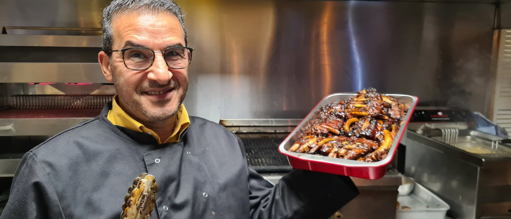
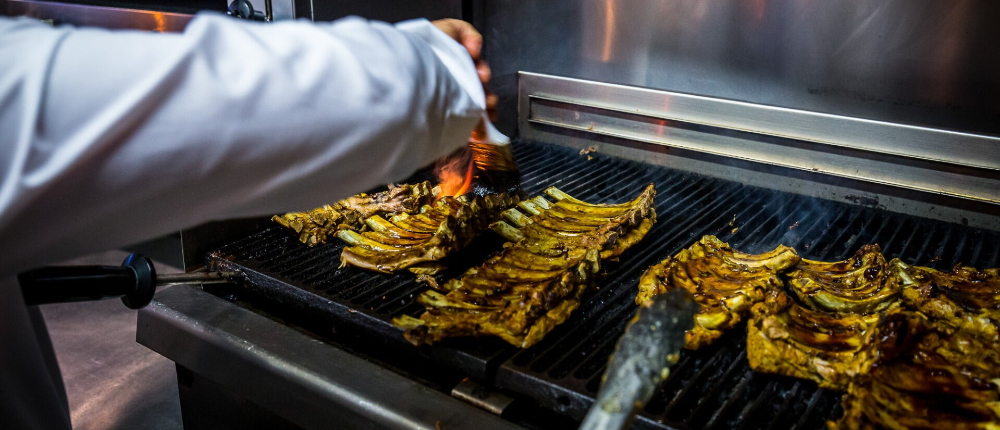
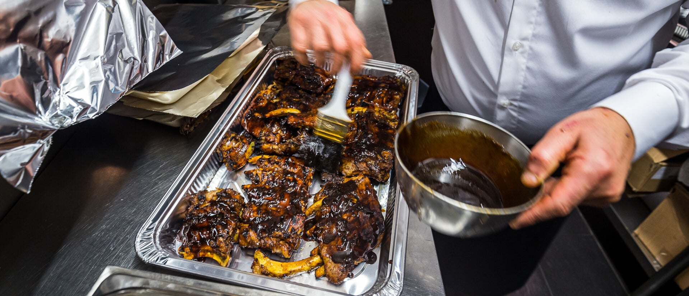
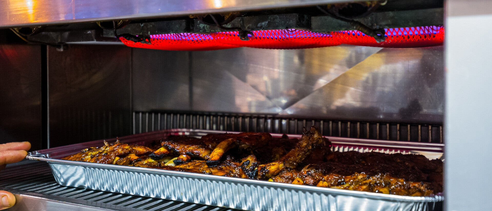
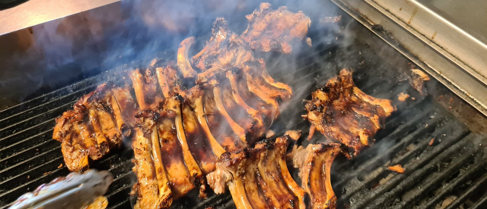
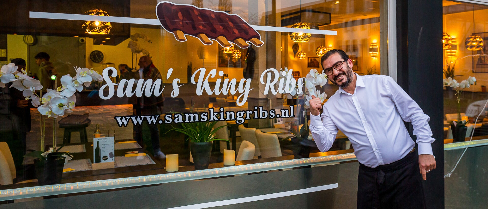
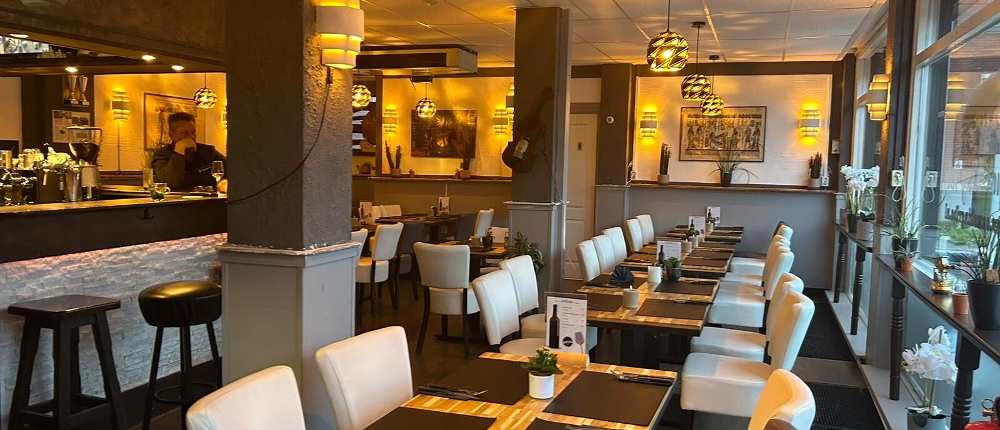
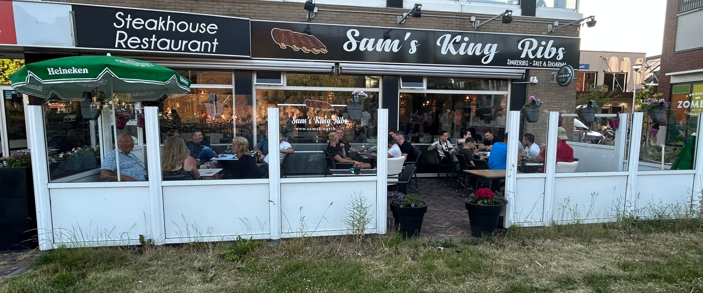
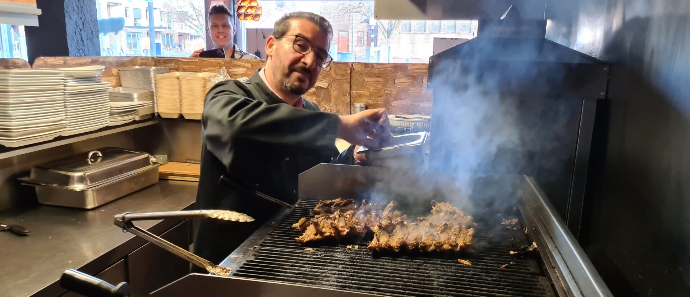

Spareribs, shoarma & saté in De Meern
De lekkerste spareribs van Nederland
Mals, vol van smaak en recht van de lavagrill. Met verse salade, saus naar keuze en knapperige friet.
Woensdag t/m zondag open van 17:00 tot 22:00
Echt goede spareribs, gewoon in De Meern
Zin in écht goede spareribs? Bij Sam's King Ribs in De Meern geniet je van heerlijk malse spareribs, smaakvolle shoarma en saté. Al onze gerechten worden vers bereid en geserveerd met verse salade, sauzen naar keuze en knapperige friet.
Onze spareribs zijn niet alleen populair bij onze gasten: ze werden door SpareribFans.nl uitgeroepen tot lekkerste spareribs van Nederland. Kom langs in ons restaurant en ontdek zelf waarom zoveel spareribliefhebbers voor Sam's King Ribs kiezen.
Sam's King Ribs is in Utrecht en omgeving hét adres voor de lekkerste spareribs, shoarma en saté.

Zo maken wij onze spareribs
Goede spareribs beginnen bij een goede bereiding. Bij Sam's King Ribs nemen we de tijd om onze spareribs heerlijk mals en vol van smaak te maken. Van de voorbereiding tot het grillen en aflakken: alles draait om die herkenbare smaak waar onze spareribs om bekendstaan.
Met aandacht bereid, royaal op smaak gebracht en precies zoals een goede sparerib hoort te zijn: om je vingers bij af te likken. Bekijk de video en ontdek hoe wij onze spareribs bereiden.

Grillen op de lavagrill
Aflakken met saus
Nog even onder de grill

Officieel de lekkerste spareribs van Nederland!
We zeggen het niet alleen zelf… SpareribFans.nl riep onze spareribs uit tot de lekkerste van Nederland! In 2021 wonnen we de felbegeerde Ribs Of The Year Award en in 2022 eindigden we opnieuw op het podium met een prachtige tweede plaats.
Trots? Absoluut. Maar uiteindelijk moet je ze natuurlijk gewoon zelf komen proeven. Durf jij de nummer 1 van Nederland aan?
- 2021Ribs Of The Year Award, SpareribFans.nl
- 2022Opnieuw op het podium: tweede plaats
- 9,5Nog steeds nummer 1 in het algemeen klassement
De ultieme XXXL Spare Ribs Challenge
De lekkerste spareribs van Nederland, maar dan in een formaat waar je even stil van wordt. Bestel onze XXXL-portie en ga de uitdaging aan!
Krijg jij deze gigantische berg spareribs helemaal in je eentje binnen 2 uur op? Dan verdien je een plek op onze Wall of Fame!
Grote trek? Bewijs het maar. Vraag onze medewerkers naar de XXXL Spare Ribs Challenge!
- Portie
- XXXL
- Tijd
- 2 uur
- Prijs
- € 59,95
Onze spareribs konden niet beter. Dus pakten we de friet aan.
We hebben écht ons best gedaan om onze spareribs nóg lekkerder te maken. Na veel proberen kwamen we tot één conclusie: dat is gewoon niet mogelijk.
Krokant van buiten, zacht van binnen en heerlijk goudbruin. Verser. Krokant(er). Lekkerder.
Proef zelf waarom deze combinatie zo verslavend lekker is!

Over Sam's King Ribs
Mijn naam is Sam en samen met mijn familie run ik Sam's King Ribs in De Meern. Ik kom oorspronkelijk uit Egypte en heb al jarenlang een grote passie voor horeca en goed eten. Voor mij draait een restaurant niet alleen om lekker eten, maar ook om gastvrijheid, gezelligheid en gasten die met een goed gevoel weer naar huis gaan.
In 2018 ging ik op zoek naar de juiste plek voor mijn restaurant. Toen ik in De Meern terechtkwam, voelde het eigenlijk meteen goed. Er was direct een klik met de omgeving en de mensen en al snel besloot ik hier Sam's King Ribs te vestigen. Op 23 december 2018 openden we voor het eerst onze deuren aan de Castellumlaan 2.
Vanaf het begin hadden we één duidelijk doel: onze gasten heerlijk vers eten in een gezellige sfeer bieden. Samen met mijn familie doen we er iedere dag alles aan om ervoor te zorgen dat onze gasten zich welkom en thuis voelen. Dat veel mensen inmiddels regelmatig bij ons terugkomen, is voor ons misschien wel het mooiste compliment.
Lees verder: onze passie voor spareribs
Onze passie voor spareribs
Door mijn jarenlange ervaring in de horeca wist ik hoe populair goede spareribs zijn. Maar écht goede spareribs maken is een vak apart. Het juiste vlees, een goed recept, de bereiding en het garen: alles moet kloppen.
Door de jaren heen heb ik onze bereiding steeds verder geperfectioneerd. Inmiddels weten spareribsliefhebbers uit heel Nederland Sam's King Ribs te vinden om onze ribs zelf te komen proeven.
En daar zijn we natuurlijk ontzettend trots op. In 2021 werden onze spareribs door SpareribFans.nl bekroond met de Ribs Of The Year Award en uitgeroepen tot de lekkerste spareribs van Nederland. Een jaar later eindigden we opnieuw op het podium met een tweede plaats.
Onze spareribs staan bovendien nog altijd bovenaan in het algemeen klassement van SpareribFans.nl met een 9,5. Een geweldige erkenning voor iets waar we als familie iedere dag met veel plezier en aandacht aan werken.
Kom het zelf proeven
Natuurlijk is er bij Sam's King Ribs meer dan alleen spareribs. Je kunt bij ons ook genieten van onder andere een heerlijke biefstuk, saté en shoarma. Alles met dezelfde aandacht voor smaak, kwaliteit en gastvrijheid.
Maar uiteindelijk kunnen we natuurlijk van alles over onze gerechten vertellen. Je kunt ze beter zelf komen proeven. We verwelkomen je graag bij Sam's King Ribs in De Meern voor lekker eten en een gezellige avond.
Heel graag tot ziens bij Sam's King Ribs!Sam & familie



Heeft u iets te vieren?
U kunt bij Sam's King Ribs ook uw verjaardag of jubileum vieren. Neem vrijblijvend contact met ons op om de mogelijkheden te bespreken.
Hoe was uw bezoek?
Heeft u lekker gegeten bij Sam? Laat dan een bericht voor Sam achter bij Google Reviews: zoek Sam's King Ribs op in Google, klik op 'Reviews' en dan op 'Een review schrijven'.
Contact & reserveren
Heb je een vraag, wil je meer weten of gewoon even contact opnemen? We helpen je graag! Bel, mail of kom gezellig langs bij Sam's King Ribs.
Reserveren? Bel 030 - 658 57 04. Met een groep van 7 personen of meer reserveer je telefonisch.
Sam's King RibsCastellumlaan 2
3454 VB De Meern (Utrecht)
030 - 658 57 04
info@samskingribs.nl
Openingstijden
| maandag | gesloten |
|---|---|
| dinsdag | gesloten |
| woensdag | 17:00 – 22:00 |
| donderdag | 17:00 – 22:00 |
| vrijdag | 17:00 – 22:00 |
| zaterdag | 17:00 – 22:00 |
| zondag | 17:00 – 22:00 |
Route naar Sam's King Ribs
Plan via Google Maps je route naar Sam's King Ribs in De Meern (Utrecht). Reis je met het openbaar vervoer? Plan dan je reis via 9292.nl.